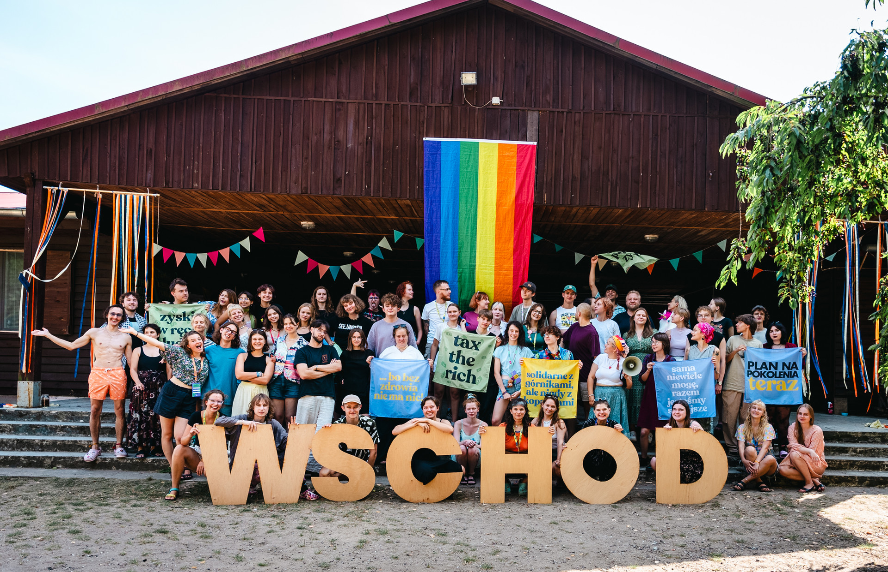
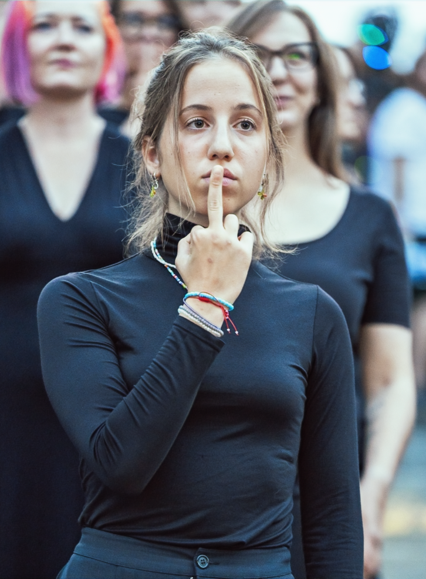
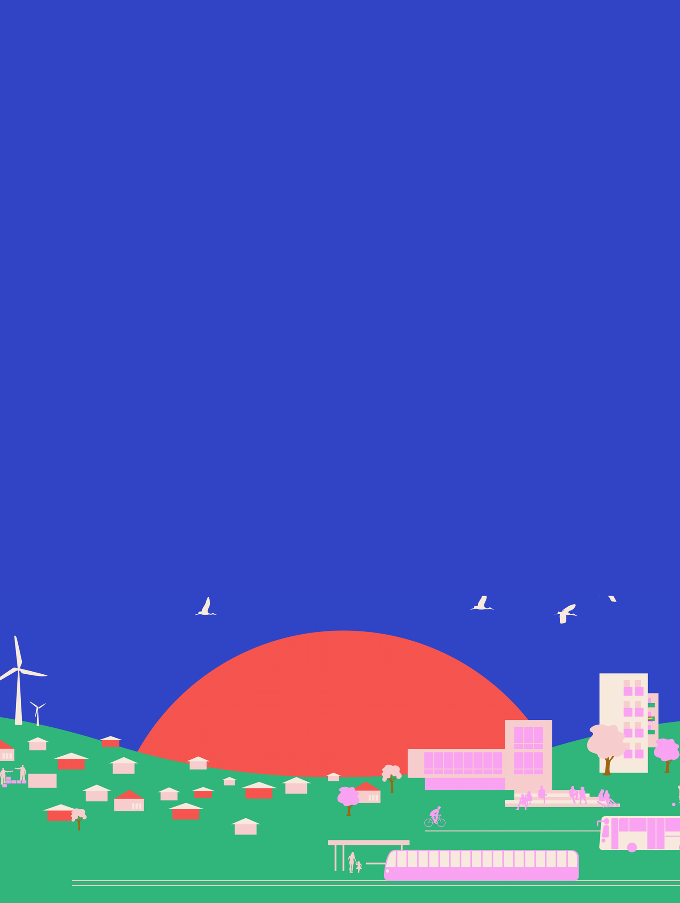
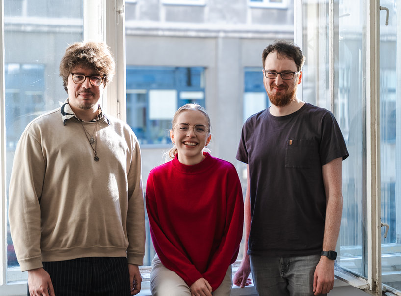

wschód /
zapowiada
nowy dzień.
My walczymy, żeby był godny i bezpieczny — dla nas wszystkich.
Wschód łączy ludzi gotowych do walki o godne i bezpieczne życie dla wszystkich. Chcemy głębokiej zmiany w polityce, a żeby ją osiągnąć — budujemy społeczne poparcie dla Planu Na Pokolenia: naszej odważnej wizji działań, które mogą wyprowadzić nas z obecnych kryzysów.
Działamy oddolnie, demokratycznie, międzypokoleniowo i intersekcjonalnie. Łączymy klimat ze sprawiedliwością społeczną, prawa pracownicze z prawami osób LGBTQ+, mieszkalnictwo z ochroną przyrody — bo wiemy, że bez całościowego podejścia nie ma mowy o skutecznej zmianie.

fot. archiwum Wschodujesteśmy rewolucją.
Co tydzień wysyłamy krótki list o tym, co planujemy, jak działać i jak myśleć o polityce inaczej niż gazety. Bez clickbaitu, bez prośby o darowiznę co drugi mail. Tylko konkrety, refleksje i zaproszenia do działania.
Możesz wypisać się jednym kliknięciem. Nie udostępniamy adresów nikomu.
polityka dla ludzi, a nie dla wielkiego biznesu.
Chcemy całkowicie przedefiniować priorytety polskiej sceny politycznej — odejść od skupienia na zyskach nielicznych, skończyć z nieuczciwym podziałem bogactwa, zapewnić ludziom uznanie ich praw i odpowiedź na ich potrzeby, oraz położyć kres wyzyskowi planety.
Mówimy o godnym życiu — nie jako przywileju, ale jako niezbywalnym prawie, które należy się każdemu i każdej z nas.

Plan Na Pokolenia. Konkretny. Spisany. Do podpisania.
33-stronicowy dokument, który powstał po dwóch latach rozmów z ekspertkami, pracownikami, mieszkankami wsi i miast, z młodzieżą i z tymi, którzy zostali z tyłu polskiej transformacji. 9 filarów. Setki postulatów.
utrzymujemy się ze składek i darowizn.
Nie bierzemy pieniędzy od spółek skarbu państwa, nie bierzemy od partii. Każda złotówka pochodzi od ludzi takich jak Ty — i to ona pozwala nam robić to, co robimy: organizować, mobilizować, pisać, protestować.

fot. Konrad Skotnickistronger roots.
Część naszych działań wspiera Fundacja im. Stefana Batorego w ramach programu Stronger Roots, finansowanego przez Unię Europejską z programu Obywatele, Równość, Prawa i Wartości (CERV). Program wzmacnia odporność i stabilność organizacji społecznych oraz ich relacje ze społeczeństwem. Wyrażone tu poglądy są poglądami autorów_ek i niekoniecznie odzwierciedlają stanowisko Unii Europejskiej.